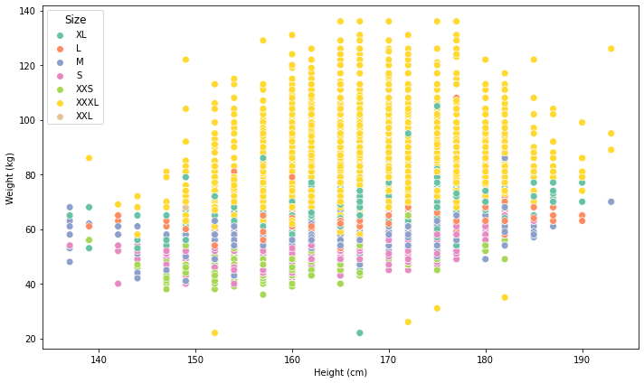
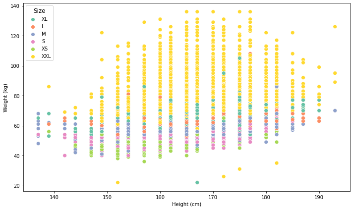

Contents
##Clothing Size Predicition
import numpy as np # linear algebra
import seaborn as sns
import matplotlib.pyplot as plt
import pandas as pd # data processing, CSV file I/O (e.g. pd.read_csv)
# Input data files are available in the read-only "../input/" directory
# For example, running this (by clicking run or pressing Shift+Enter) will list all files under the input directory
import os
for dirname, _, filenames in os.walk('/kaggle/input'):
for filename in filenames:
print(os.path.join(dirname, filename))
# You can write up to 20GB to the current directory (/kaggle/working/) that gets preserved as output when you create a version using "Save & Run All"
# You can also write temporary files to /kaggle/temp/, but they won't be saved outside of the current session
df = pd.read_csv('/content/drive/MyDrive/datamining/tugas/data/final_test.csv')
df.head()
| weight | age | height | size | |
|---|---|---|---|---|
| 0 | 62 | 28.0 | 172.72 | XL |
| 1 | 59 | 36.0 | 167.64 | L |
| 2 | 61 | 34.0 | 165.10 | M |
| 3 | 65 | 27.0 | 175.26 | L |
| 4 | 62 | 45.0 | 172.72 | M |
df.dtypes
weight int64
age float64
height float64
size object
dtype: object
df.isna().sum()
weight 0
age 257
height 330
size 0
dtype: int64
df= df.dropna()
df['height'] = df['height'].astype(int)
df['age'] = df['age'].astype(int)
df['size'].value_counts()
M 29575
S 21829
XXXL 21259
XL 19033
L 17481
XXS 9907
XXL 69
Name: size, dtype: int64
###Data Visualization
bins = [150, 155,160, 165, 170, 175, 180, 185, 190, 195, 200]
ax = sns.histplot(data=df, x='height', bins=bins, color=sns.color_palette('Set2')[2], linewidth=2)
ax.set(title='Histogram', xlabel='Height (cm)', ylabel='Count')
[Text(0, 0.5, 'Count'),
Text(0.5, 0, 'Height (cm)'),
Text(0.5, 1.0, 'Histogram')]
ax = sns.histplot(data=df, x='age', color=sns.color_palette('Set2')[2], linewidth=2)
ax.set(title='Histogram', xlabel='Age', ylabel='Count')
[Text(0, 0.5, 'Count'), Text(0.5, 0, 'Age'), Text(0.5, 1.0, 'Histogram')]
plt.figure(figsize=(10,6), tight_layout=True)
ax = sns.scatterplot(data=df, x='height', y='weight', hue='size', palette='Set2', s=60)
ax.set(xlabel='Height (cm)', ylabel='Weight (kg)')
ax.legend(title='Size', title_fontsize = 12)
plt.show()

###Data Manipulation & Feature Engineering
df = df.loc[(df['age'] >= 20.0) & (df['age'] <= 60)]
print('Min value: ', df['age'].min())
print('Max value: ',df['age'].max())
Min value: 20
Max value: 60
df['size'].value_counts()
M 29191
S 21515
XXXL 20809
XL 18785
L 17249
XXS 9760
XXL 66
Name: size, dtype: int64
print('Average height for XXS clothes: ',df.loc[df['size'] == 'XXL']['height'].mean(), ' and average weight: ', df.loc[df['size'] == 'XXS']['weight'].mean())
print('Average height for S clothes: ',df.loc[df['size'] == 'S']['height'].mean(),' and average weight: ', df.loc[df['size'] == 'S']['weight'].mean())
print('Average height for M clothes: ',df.loc[df['size'] == 'M']['height'].mean(),' and average weight: ', df.loc[df['size'] == 'M']['weight'].mean())
print('Average height for L clothes: ',df.loc[df['size'] == 'L']['height'].mean(),' and average weight: ', df.loc[df['size'] == 'L']['weight'].mean())
print('Average height for XL clothes: ',df.loc[df['size'] == 'XL']['height'].mean(),' and average weight: ', df.loc[df['size'] == 'XL']['weight'].mean())
print('Average height for XXL clothes: ',df.loc[df['size'] == 'XXL']['height'].mean(),' and average weight: ', df.loc[df['size'] == 'XXL']['weight'].mean())
print('Average height for XXXL clothes: ',df.loc[df['size'] == 'XXXL']['height'].mean(),' and average weight: ', df.loc[df['size'] == 'XXXL']['weight'].mean())
Average height for XXS clothes: 159.53030303030303 and average weight: 50.55
Average height for S clothes: 163.35022077620266 and average weight: 54.122333255868
Average height for M clothes: 165.09293960467267 and average weight: 58.22558322770717
Average height for L clothes: 166.5494231549655 and average weight: 62.27908864281987
Average height for XL clothes: 167.25323396326857 and average weight: 65.61272291722119
Average height for XXL clothes: 159.53030303030303 and average weight: 66.4090909090909
Average height for XXXL clothes: 167.4429333461483 and average weight: 76.0180691047143
df = df[df['size']!= 'XXL']
df["size"].replace({"XXS": "XS", "XXXL": "XXL"}, inplace=True)
df["size"].value_counts()
M 29191
S 21515
XXL 20809
XL 18785
L 17249
XS 9760
Name: size, dtype: int64
plt.figure(figsize=(10,6), tight_layout=True)
ax = sns.scatterplot(data=df, x='height', y='weight', hue='size', palette='Set2', s=60)
ax.set(xlabel='Height (cm)', ylabel='Weight (kg)')
ax.legend(title='Size', title_fontsize = 12)
plt.show()

###Model building
from sklearn.model_selection import train_test_split
X = df.iloc[:,:-1]
y = df['size']
X_train, X_test, y_train, y_test = train_test_split(X,y,test_size = 1/3)
###Penerapan Decision Tree
from sklearn.tree import DecisionTreeClassifier
from sklearn.metrics import accuracy_score
from sklearn.metrics import confusion_matrix
from sklearn.metrics import classification_report
model = DecisionTreeClassifier()
model.fit(X_train, y_train)
predictions = model.predict(X_test)
print("Accuracy:")
print(accuracy_score(y_test, predictions))
Accuracy:
0.5010101526737079
y_test
12214 XL
79253 XXL
13823 M
96339 L
9329 S
...
67543 L
12251 M
74243 L
92330 L
76947 XL
Name: size, Length: 39103, dtype: object
d = {'weight':[100], 'age': [23], 'height': [175]}
Me = pd.DataFrame(data=d)
Me
| weight | age | height | |
|---|---|---|---|
| 0 | 100 | 23 | 175 |
model.predict(Me)[0]
'XXL'